The figure functions return ordinary ggplot2 objects, so
they can be modified with +. They share these defaults:
- Colour. The Okabe-Ito palette, which stays distinguishable under the common forms of colour-vision deficiency. No red/green contrasts are used.
- Direct labels. Series are named at the end of their line, not in a legend. Labels are moved apart so they do not overlap, and kept inside the panel.
-
Three font sizes. 8 pt for titles and axis titles,
7 pt for labels and legends, and 6 pt for tick labels. All three scale
with
base_size. - Axes. Linear axes start at zero. Date breaks stay within the data, and tick labels use k/M suffixes.
-
Source caption. Cites the NHS Business Services
Authority, OpenPrescribing and the licence. Turn it off with
source = FALSEor replace it with your own text. -
Journal sizes.
op_save()writes at 85, 120 or 178 mm wide, at 300 dpi for raster formats.
All examples use the bundled op_example data (national
items by month).
Time series: op_plot_trend()
op_plot_trend(ex, y = "items")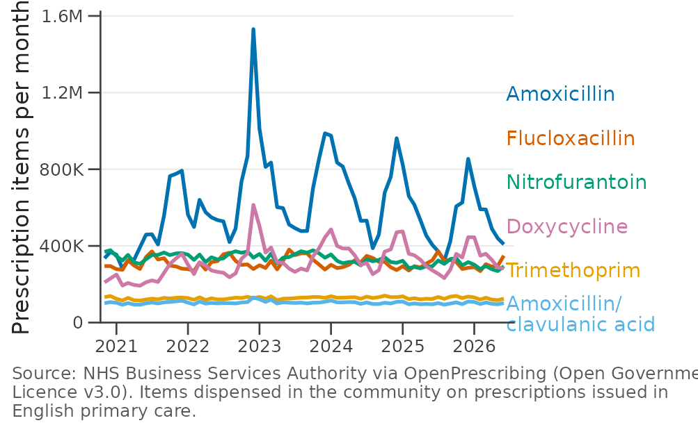
Many series: highlight a few
If there are more series than colours, the series with the highest
final values are coloured and labelled, up to max_groups
(default 8). The others are drawn in light grey as context. Choose them
yourself with highlight. A log axis keeps rare agents
visible:
op_plot_trend(op_example, y = "items", log = TRUE,
highlight = c("Amoxicillin", "Nitrofurantoin", "Clarithromycin", "Cefalexin"))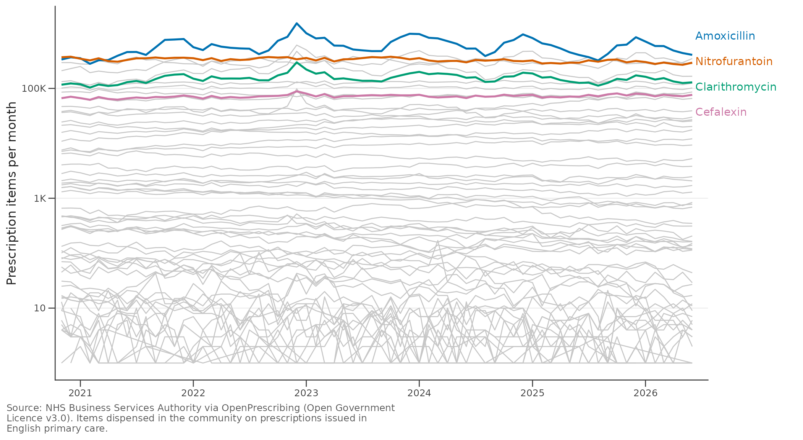
Small multiples
Pass facet with no group to get one
single-colour panel per agent. Each panel has its own y-axis, so the
trend is visible whatever the volume:
op_plot_trend(ex, y = "items", facet = "ab_name")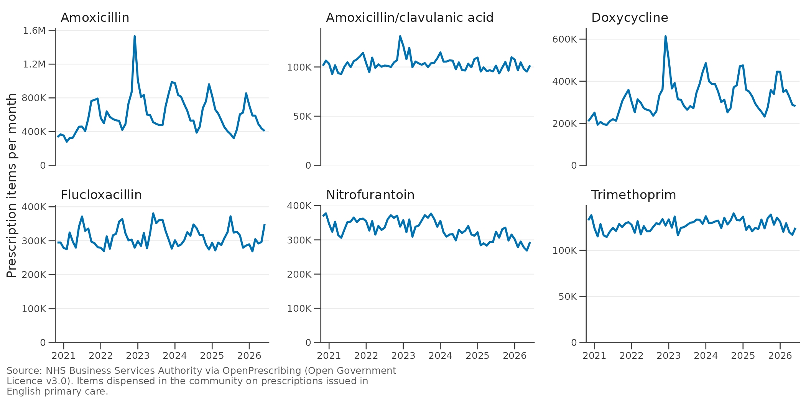
Marking events
op_plot_trend(ex[ex$ab_name %in% c("Amoxicillin", "Doxycycline"), ], y = "items",
events = data.frame(date = "2022-12-01", label = "Strep A surge"),
title = "Amoxicillin and doxycycline peaked in December 2022")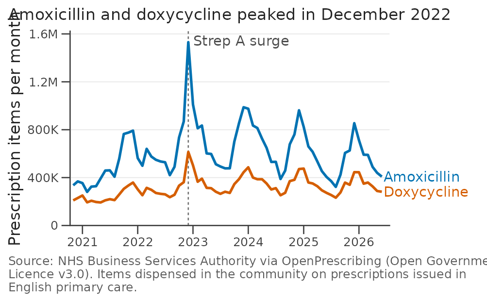
Titles are NULL by default. If you add one, make it
state the finding, as above.
Seasonality: op_plot_seasonal()
Months run along the x-axis and each line is one calendar year. Earlier years are drawn in graded grey and the latest year in colour, so the seasonal shape and the change between years can be read together:
op_plot_seasonal(ex[ex$ab_name %in% c("Amoxicillin", "Nitrofurantoin", "Doxycycline", "Trimethoprim"), ],
y = "items", years = 2022:2026)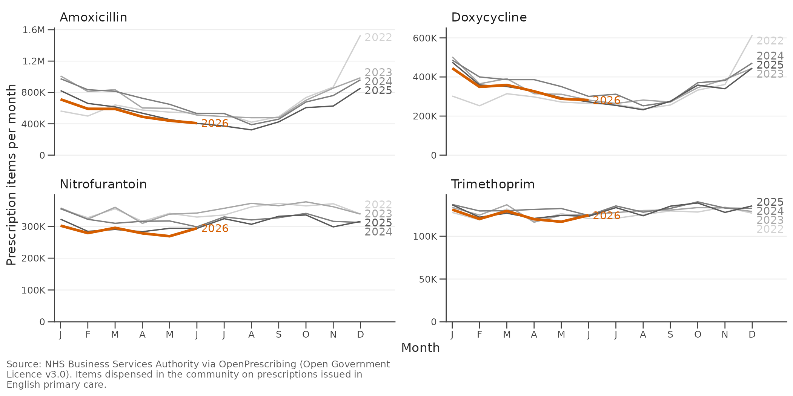
Amoxicillin and doxycycline, used mainly for respiratory infections, have a winter peak. Nitrofurantoin and trimethoprim, used for urinary tract infections, are almost flat across the year.
Variation between organisations:
op_plot_distribution()
With data for many organisations, such as all Sub-ICB Locations from
op_antibiotic_use(..., org_type = "sicbl"), this function
draws the median with 25th–75th and 5th–95th percentile bands per month.
Selected organisations can be overlaid as labelled lines. Plot a
rate, not counts, so organisations of different sizes
can be compared.
The example below uses simulated organisations, because the bundled data are national only:
set.seed(2024)
sim <- expand.grid(date = seq(as.Date("2023-01-01"), by = "month", length.out = 30),
org_id = sprintf("S%02d", 1:60), stringsAsFactors = FALSE)
sim$org_name <- paste("Sub-ICB", sim$org_id)
season <- 8 * cos(2 * pi * (as.integer(format(sim$date, "%m")) - 1) / 12)
sim$rate <- 45 + season + rnorm(60, 0, 6)[match(sim$org_id, unique(sim$org_id))] + rnorm(nrow(sim), 0, 2)
op_plot_distribution(sim, y = "rate", highlight = c("S07", "S42"), source = FALSE,
ylab = "Items per 1,000 patients per month (simulated)")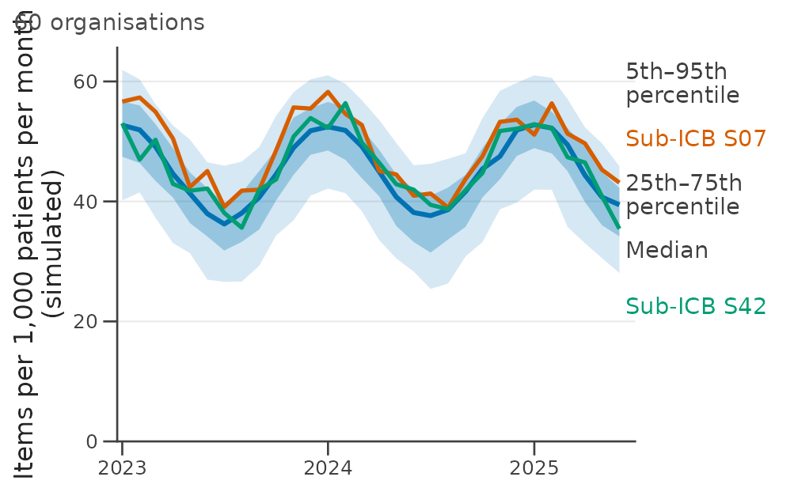
Heatmap: op_plot_heatmap()
Each tile is colour-coded by its value relative to the drug’s own median, on a log scale centred at 1×. Drugs whose volumes differ a hundredfold can therefore share one colour scale, and seasonality and step changes stand out:
op_plot_heatmap(ex, y = "items")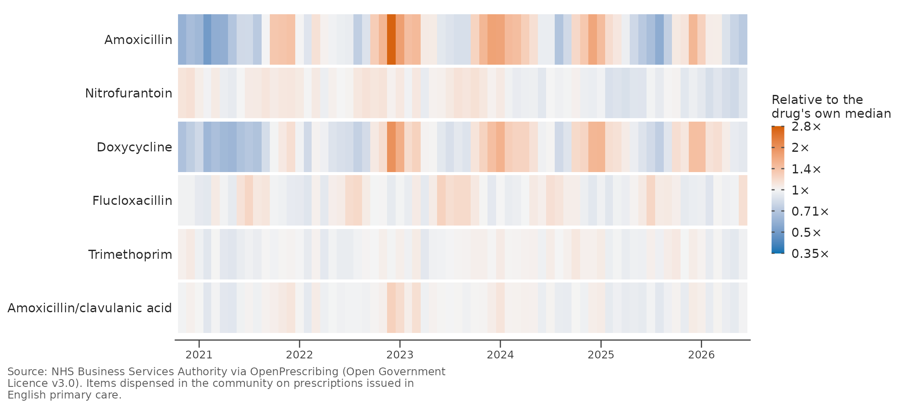
Use scale = "none" to colour by raw values instead (the
cividis colour map, which is perceptually uniform). This suits rows of
similar size. Here amoxicillin’s December 2022 peak takes up most of the
colour range, which is why "ratio" is the default:
op_plot_heatmap(ex, y = "items", scale = "none", order_by = "name")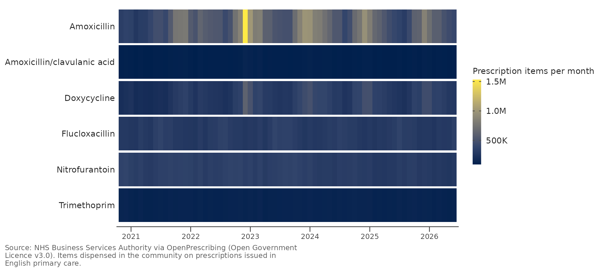
Rates and axis labels
When op_rate() (or op_antibiotic_use())
adds a rate column, it records the rate definition. The
plot functions use that definition as the y-axis label. The list size
below is an illustrative constant, not real data:
amx <- op_example[op_example$ab == "AMX", ]
den <- data.frame(date = amx$date, org_id = "england", total_list_size = 63e6)
amx_rate <- op_rate(amx, den)
op_plot_trend(amx_rate, y = "rate")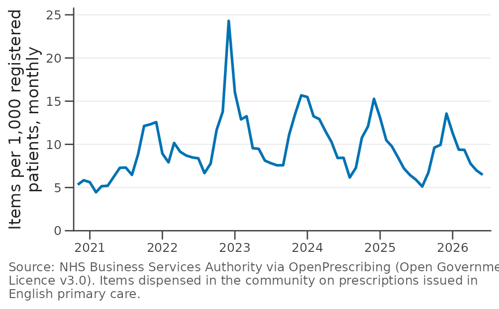
Customising
The plots are ordinary ggplot2 objects:
op_plot_trend(ex, y = "actual_cost", highlight = c("Amoxicillin", "Nitrofurantoin")) +
ggplot2::labs(y = "Monthly cost (\u00a3)")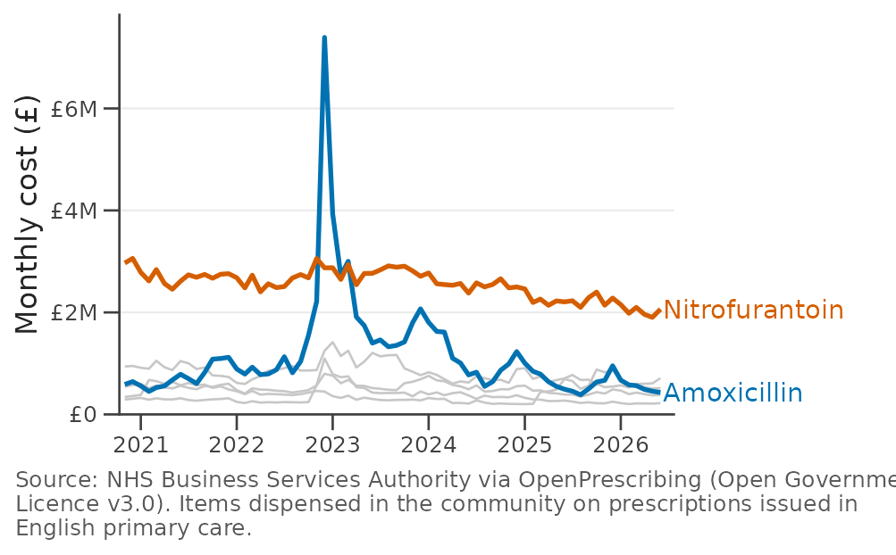
theme_op() and scale_colour_op() can also
be used on your own plots:
library(ggplot2)
yr <- aggregate(items ~ ab_name + year, data = transform(ex, year = format(date, "%Y")), FUN = sum)
yr <- yr[yr$year %in% c("2021", "2025"), ]
ggplot(yr, aes(items / 1e6, reorder(ab_name, items), colour = year)) +
geom_line(aes(group = ab_name), colour = "grey70") +
geom_point(size = 2) +
scale_colour_op(name = NULL) +
labs(x = "Items per year (millions)", y = NULL) +
theme_op()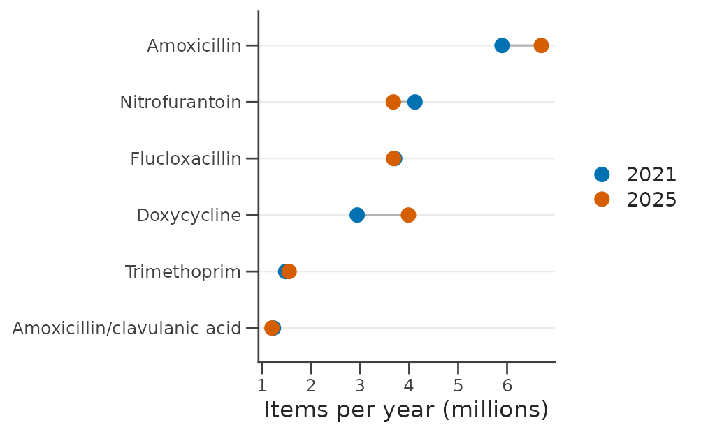
Saving
p <- op_plot_seasonal(ex, y = "items", years = 2022:2026)
op_save(p, "fig2.pdf", width = "double", aspect = 0.5) # vector PDF (Cairo), 178 mm wide
op_save(p, "fig2.png", width = "double", aspect = 0.5) # 300 dpi PNG (ragg if installed)
op_save(p, "fig2.tiff", width = 178, height = 90, dpi = 600)Set the figure size when saving, not by stretching it afterwards. Font sizes are fixed in points, so a figure saved at 85 mm and printed at 85 mm shows 8/7/6 pt text exactly.